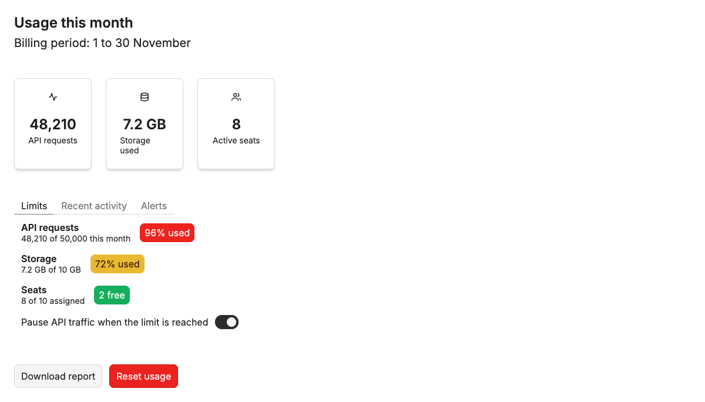
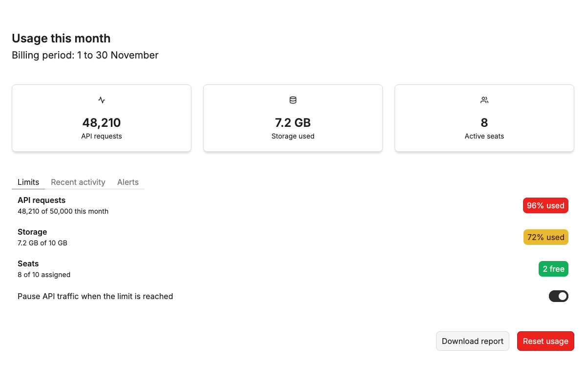

If you work on a design system, you have probably already heard the claim: write the specs well enough and a coding agent will build the front end from them. Most experienced developers would add a second half. The specs are needed, but whoever builds the screen also has to look at it. We tested both halves on a task we could score exactly, to see how much each one is worth.
The design system is Figma's Simple Design System, in its open React version. It ships with ten rules files written for coding agents and a set of example screens. That is the spec-driven setup many teams are building towards, so we started from it and added two automatic checks of our own.
We ran it the way we ran More agents or a better manager?: every rule was written down and committed before the run it governed, deterministic checks ran first, and the scoring was done by scripts that did not produce the results. This time the results also went through a blind human inspection at the end.
We built the test so that only one thing changed
The agent was Claude Code run from scripts, with the model Opus 5.5 at medium effort and none of our own settings or memory. Its task was to build one screen from a picture of it and show it in the app. There were three screens it had never seen: a team table, a checkout and a usage page, each 1,200 px wide.
Three groups made 12 runs each, 4 per screen, 36 in all. Every group had the written rules, the example screens, both checks and the target picture. The first group had nothing more. The second had one more sentence in its prompt: before you finish, compare your component with the target. The third had that sentence and a command that takes a screenshot of the screen the agent has just built, which it can then open and look at.
A result counts as a match when almost every text of a reference build is present, at least nine in ten of them have the same size, weight and colour, at least four in five are within 16 px of the same place, and the screen's height is within 10%.
Seeing the result
1. With a screenshot of its own work, the agent matched the target every time
All 12 runs with the screenshot command matched. In every one, each text sat within 3 px of its place in the reference and the screen had the reference's height. In the first group, 4 of 12 matched. All 4 were the checkout; the team table and the usage page matched in none of their 8 runs. The same setup had matched 5 of 12 in our earlier round, 3 on the checkout and 2 on the usage page.
The agent took 2 to 4 screenshots per run, 33 in all, opened each one and edited between them. Against the group that was only told to compare, the command added about 26 seconds and $0.11 to an average run.
The target
Built without a way to see the result

Built with the screenshot command

2. Telling the agent to compare changed little
With the extra sentence and no screenshot command, 6 of 12 runs matched, against 4 without the sentence. That difference is too small to tell from chance at this size. The agent opened the target picture once in every run, in every group, but in this group it had no picture of its own result to put next to it. Heights did come closer: all 12 were within 10% of the reference, against 7 of 12.
3. Human inspection was stricter than the script, and found the same result
After the scripts, we rated all 36 results by eye, each beside its target, in shuffled order and without knowing its group. The inspection accepted 2 of 12 from the first group, 3 of 12 from the second and 12 of 12 from the third. It agreed with the script on 31 of 36. The other 5 were all results the script passed and the inspection rejected.
The rule behind it was written down only after rating: if the cards were not the same height as the target, the result was rejected without looking further. The script measures the height of the whole screen, not of each card, and on that measure the rule fits 36 of 36: the 17 accepted results are exactly those as tall as the reference build.
What the specs did fix
4. The written rules fixed the code
Before this round we made 72 runs across six setups, 12 each, to see what each piece does on its own. A hardcoded value is a colour, spacing or font value typed in directly, such as #757575 or 16px, instead of the design system's named token. With the rules loaded, 0 of 48 runs wrote one. Without them, 15 of 24 did. Example screens alone helped, but 5 of those 12 runs still wrote one.
5. A check stopped the agent from deleting the page
We did not plan for this failure. The app already had a page with content. The prompt did not say to keep it, and the agent often removed it to show the new screen: in the setup with the rules alone, in 12 of 12 runs. The setups started from pages of different sizes, so we cannot say how much of that is down to the rules. A check that blocks deleted content stopped it. It blocked 14 of 24 runs, each put the page back on the first try, and none finished with content missing.
6. None of it fixed the look
With the rules loaded, sizes, weights and colours were all right in 45 of 48 runs. Position was not: 19 of 48 matched. The agent had built each screen from a picture and never saw its own result in a browser, which is what the round above went on to test.
We also built the usage page as a frame in Figma, in a copy of the design system's public Figma file, and gave the agent a text description of the frame in place of the picture, 4 runs each way. The description was read once from Figma with an open-source tool and replayed, so this says nothing about Figma's own server. Layout came out closer to the frame from the description: of 23 texts, 19, 12, 19 and 19 were within 16 px of Figma's position, against 0, 8, 2 and 11 from the picture. The frame and the React code of the same design system do not agree on layout, and measured against the code the picture runs were the closer ones.
How we checked
The scores come from scripts, and then from an inspection that did not know the groups
No model scored anything. A script renders each result twice in Chrome and compares every text with the reference build; the two passes were identical for all 36. A second measure, written separately, compares the pictures pixel by pixel and agrees on the whole: 8 of the 12 results built with the screenshot command differ from the target in 0.02% of pixels or less, against 1 of the 24 built without it, where the typical difference is 5.0%. The key to the blind rating was written and committed before anyone saw the sheet. One test run per group before the batch confirmed that our own settings stayed out, and the screenshot command was checked to be unchanged after every run that used it.
None of this says a screenshot is all an agent needs. The target picture was made by rendering a reference build, and the screenshot command renders the same way, so an exact match was reachable; a picture exported from a design tool will not match pixel for pixel, and we did not test the command against one. The script compares texts and height, not borders, shadows, icons or backgrounds, and the inspection's rule was height alone. It was done by one person, who knew the question though not the group of each result. Every result holds only for one model at one effort level, one design system, three screens and 12 runs per group, on 2026-11-19.
Specs tell the agent what to write; it still has to see what it built.
Experienced developers know this already. This is a reminder to build it into the design-to-code flow.
- Rules
- With the written rules loaded, 0 of 48 runs typed in a raw value; without them, 15 of 24 did.
- Checks
- A check for deleted content blocked 14 of 24 runs, and every one put the page back.
- The look
- Rules, examples and checks together matched the target in 4 of 12 runs.
- Being told
- Telling the agent to compare gave 6 of 12, too small a change to tell from chance.
- Seeing
- With a screenshot of its own result, 12 of 12 matched, by script and by eye.
Thanks to the designers who keep doing their best work. The tools are changing, and we see them bringing design and code closer together.